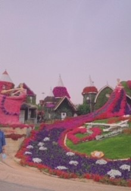
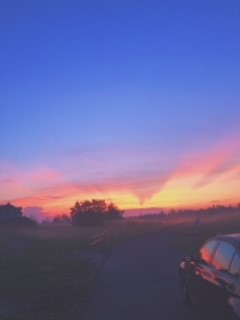
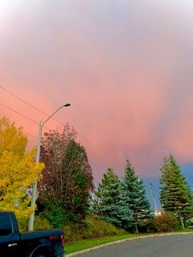
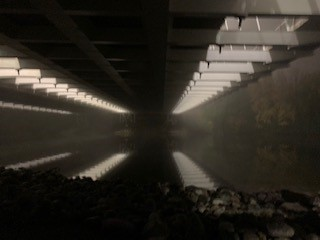

When it comes to photography, I'm not the most knowledgable or experienced, but I still have a passion and love for capturing beautiful moments. I would also like to improve my skills and become a professional eventually. Below are some pictures I've taken and edited.



